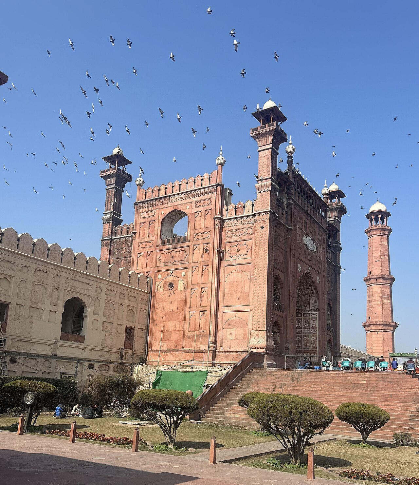
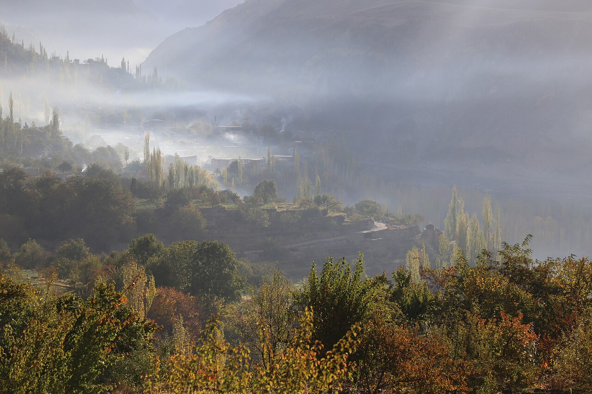
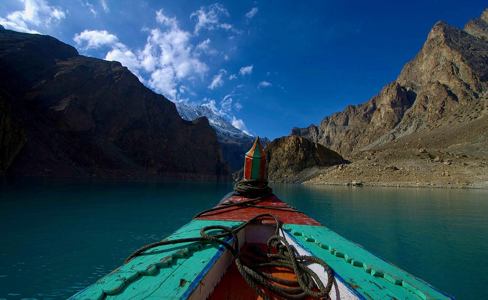

Chess
My relationship with chess is exactly like debugging: confident in the opening, worried by move 12, and completely blaming the engine for move 30.
I play online, on the board, and occasionally against my own bad decisions.

Cricket
National duty. I bowl off-spin with questionable accuracy and bat with even worse intent — yet somehow every gully match still needs my team.
If you have ever lost a ball on a rooftop in Rawalpindi, it was probably mine.

Trekking & Photography
From the Margalla Hills trails to the Hunza Valley, I like places where the phone battery and my legs get tested at the same time.
Photography sneaks in so the walks turn into something I can frame later — check the gallery.

Food & Travel
Half foodie, half road-tripper. A trip is not complete until I have eaten something the locals insisted was “mild”.
Attabad Lake boat chai remains undefeated.